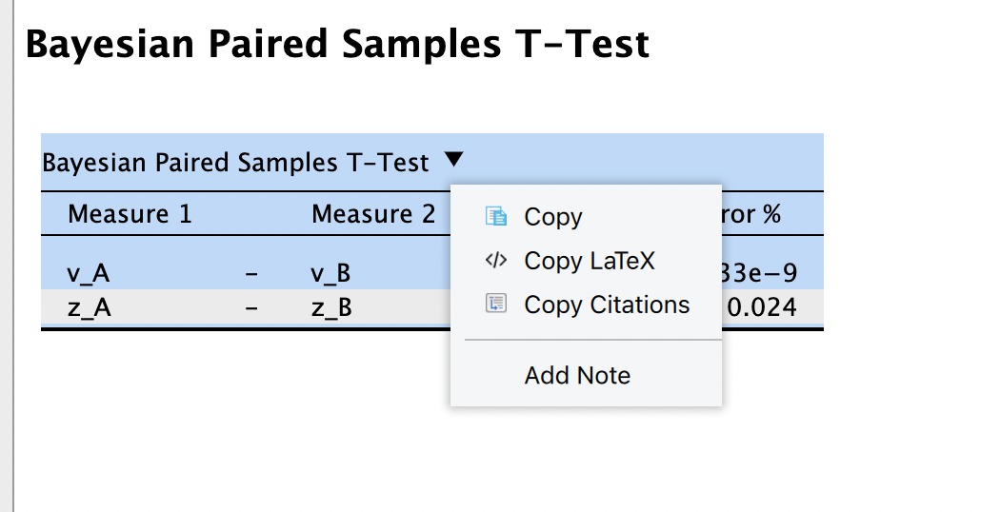
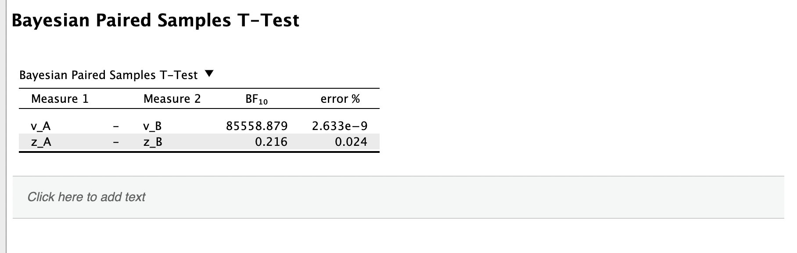
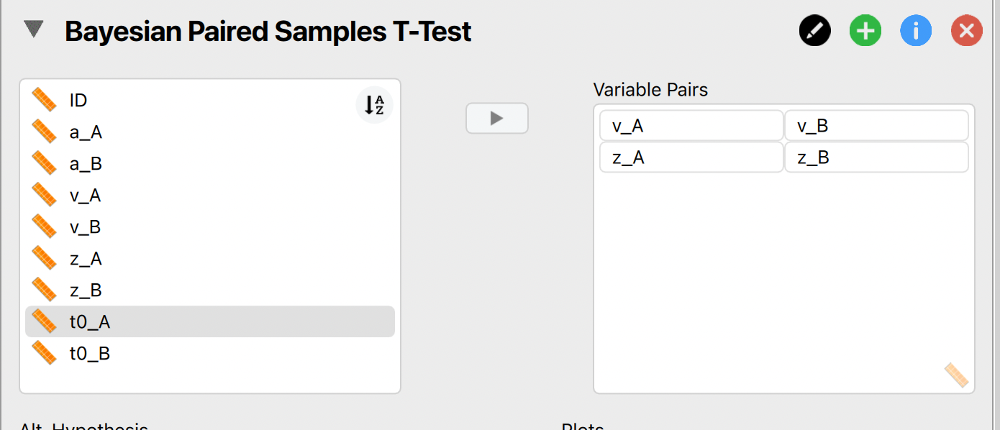
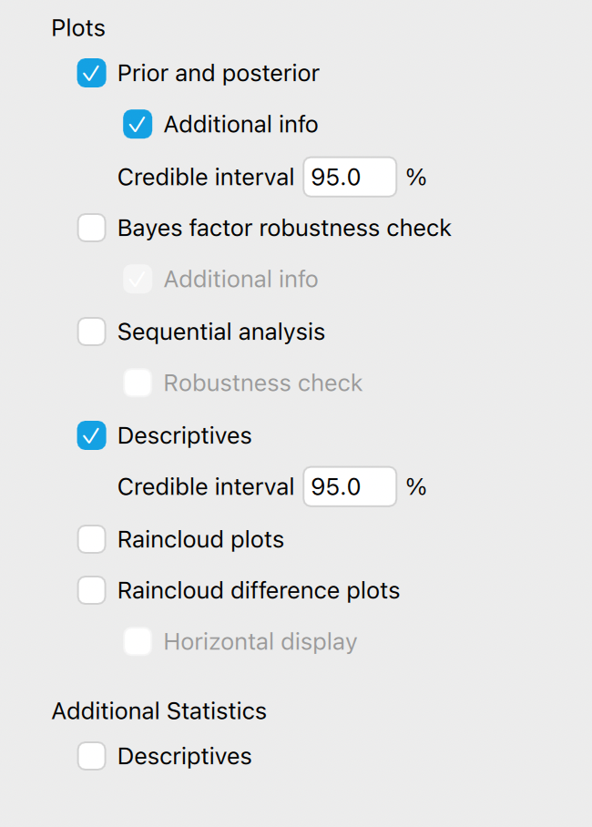
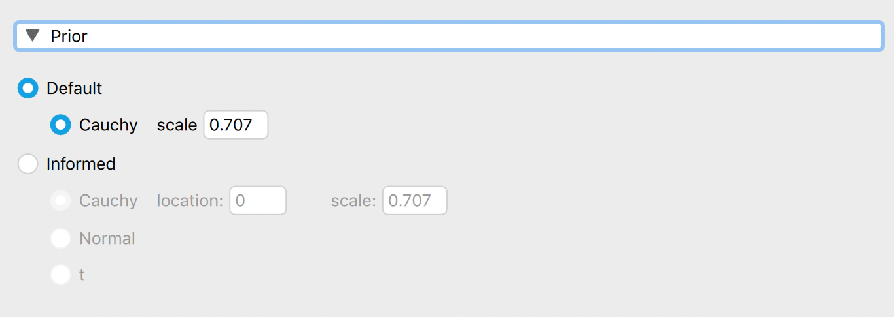
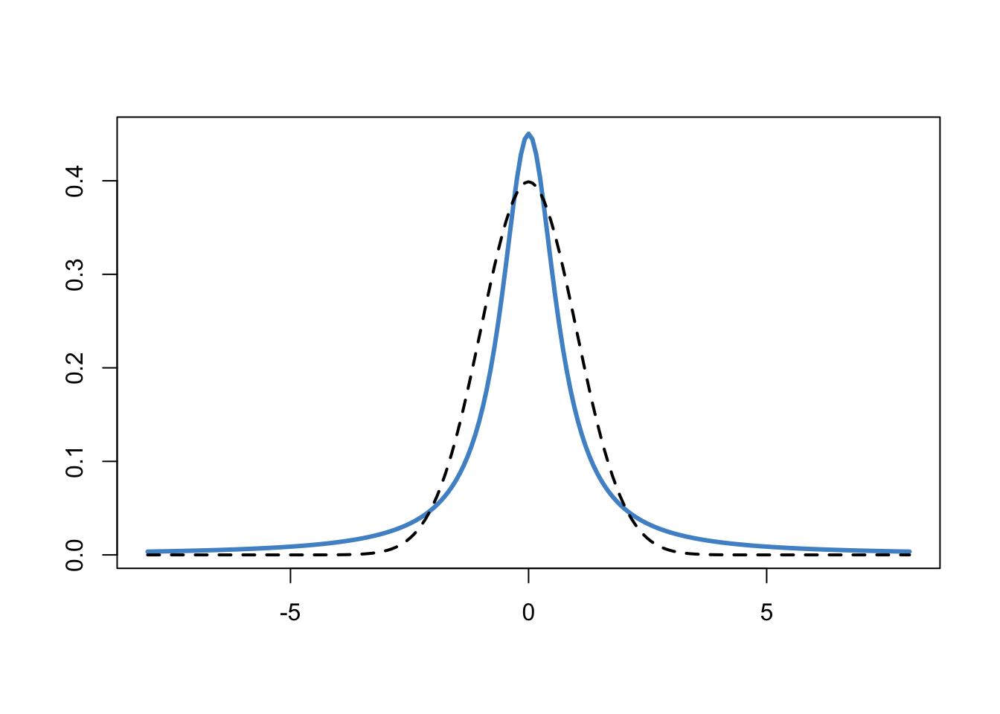

Übung 7
Group-level Analyse von DDM Parametern.
![]()
Die Daten für diese Übung finden Sie hier:
Laden Sie bitte Ihre Lösung als JASP Dokument bis Mittwoch, 01.06.2022, um 00:30 Uhr, in den Order für Übung 7 auf ILIAS.
Nennen Sie Ihr File Matrikelnummer_Nachname_uebung-7.jasp.
Aufgabenstellung
In dieser Aufgabe geht es darum, die den Einfluss einer experimentellen Manipulation auf die 4 Parameter des DDM zu untersuchen. Es handelt sich hier um dasselbe (simulierte) Experiment wie in Übung 6, diesmal mit 24 Versuchspersonen. Jede Person wurde in 2 Bedingungen (“A” und “B”) getestet. Die experimentelle Manipulation sollte sich selektiv auf den drift rate Parameter auswirken, ohne die anderen Parameter zu beeinflussen.
In dieser Übung geht es darum, zu zeigen, dass sich die drift rates (v) zwischen den Bedingungen unterscheiden, die bias, boundary separation und non-decision time Parameter (z, a, t0) jedoch nicht.
Führen Sie mit jedem der 4 (repeated-measures) Parameter einen Paired Samples T-Test in JASP durch. Wählen Sie sowohl die frequentistische als auch die Bayesianische Variante, und beschreiben Sie die Resultate.
Um eine Beschreibung einzufügen, können Sie bei den Resultaten auf das Dropdown-Menu klicken, um “Notes” hinzuzufügen.

Daten einlesen
Laden Sie die Daten in ein DataFrame.
Daten vorbereiten
Der Dataframe ist im long-Format, das heisst eine Zeile pro Person und Bedingung.
head(d, 10)# A tibble: 10 × 6
ID condition a v z t0
<dbl> <chr> <dbl> <dbl> <dbl> <dbl>
1 1 A 1.44 0.261 0.523 0.206
2 1 B 1.51 1.23 0.495 0.19
3 2 A 1.46 0.293 0.505 0.2
4 2 B 1.43 1.18 0.499 0.202
5 3 A 1.63 0.284 0.484 0.188
6 3 B 1.58 1.27 0.469 0.192
7 4 A 1.44 0.237 0.517 0.203
8 4 B 1.44 1.21 0.497 0.196
9 5 A 0.593 0.517 0.481 0.28
10 5 B 1.34 1.23 0.531 0.203Für einen messwiederholten T-Test in JASP brauchen Sie jedoch eine Spalte für jede Kombination von Parameter und Bedingung. Mit pivot_wider() geht dies ganz einfach.
d_wide <- d |>
pivot_wider(names_from = "condition", values_from = c(a, v, z, t0))head(d_wide, 10)# A tibble: 10 × 9
ID a_A a_B v_A v_B z_A z_B t0_A t0_B
<dbl> <dbl> <dbl> <dbl> <dbl> <dbl> <dbl> <dbl> <dbl>
1 1 1.44 1.51 0.261 1.23 0.523 0.495 0.206 0.19
2 2 1.46 1.43 0.293 1.18 0.505 0.499 0.2 0.202
3 3 1.63 1.58 0.284 1.27 0.484 0.469 0.188 0.192
4 4 1.44 1.44 0.237 1.21 0.517 0.497 0.203 0.196
5 5 0.593 1.34 0.517 1.23 0.481 0.531 0.28 0.203
6 6 0.379 1.52 0.466 1.20 0.462 0.565 0.249 0.207
7 7 1.53 0.251 0.324 0.53 0.524 0.506 0.187 0.237
8 8 1.41 1.39 0.329 1.17 0.483 0.488 0.189 0.184
9 9 1.54 0.554 0.305 0.362 0.507 0.474 0.191 0.263
10 10 0.416 0.977 0.174 0.247 0.474 0.455 0.292 0.296Nun können Sie den wide Dataframe als CSV File exportieren. Dieses File können Sie wiederum in JASP importieren.
d_wide |> write_csv(file = "estimated-ddm-params-wide.csv")JASP
In JASP können Sie für einen Test(z.B. Bayesian Paired Samples T-Test) alle Variablenpaare, welche Sie vergleichen wollen, in das rechte Textfeld ziehen.
 Sie können aber auch für jeden Parameter einen eigenen Test durchführen. Dies macht dann Sinn, wenn Sie für die Tests unterschiedliche Einstellungen benutzen.
Anschliessend können Sie Ihre \(\mathcal{H}_1\) bestimmen, und welche Plots Sie im Output haben möchten.

Wenn Sie eine Alternativhypothese benutzen, bedeutet dies, dass Sie einen Parameter schätzen müssen (unter der \(\mathcal{H}_0\) ist dieser auf der Wert \(0\) fixiert). In JASP wird die Effektgrösse geschätzt. Jeder Paramter, welcher geschätzt wird, braucht eine prior distribution. Die Standardeinstellung in JASP ist eine zentrierte Cauchy Verteilung. Unter dem Dropdown-Menu Prior unten können Sie den scale Parameter ändern. Standardmässig ist dieser \(0.707\).

Diese Verteilung ist in unten dargestellt, und hat die Eigenschaft, dass 50% der Verteilung zwischen \(\pm 0.707\) liegen. Dies bedeutet, dass wir erwarten, dass die Effektgrösse unter der \(\mathcal{H}_1\) ungefähr in diesem Bereich liegt. Die Cauchy-Verteilung lässt aber auch zu, dass grosse Effekt auftretten können - unter dieser Verteilung sind extreme Werte wahrscheinlicher als unter z.B. einer Normalverteilung. Eine Standardnormalverteilung ist zum Vergleich ebenfalls dargestellt (gestrichelte Linie).
xrange <- seq(-8, 8, length = 201)
plot(xrange, dcauchy(xrange, 0, 0.707), "l", lwd = 3,
col = "steelblue3", xlab = "", ylab = "")
lines(xrange, dnorm(xrange, 0, 1), lty = "dashed", lwd = 2)
Sie haben auch die Möglichkeit, einen anderen Prior zu wählen. Wir werden dies in der nächsten Sitzung anschauen. In dieser Übung sollten Sie die Default-Einstellung verwenden.
Reuse
Citation
@online{ellis2022,
author = {Andrew Ellis},
title = {Übung 7},
date = {2022-05-10},
url = {https://kogpsy.github.io/neuroscicomplabFS22//pages/exercises/exercise_07.html},
langid = {en}
}